|
|
| sponges text index | photo index |
| Phylum Porifera |
| Blue
encrusting prickly sponge awaiting identification* updated Oct 2016 Where seen? This pale blue prickly encrusting sponge is sometimes seen on our Southern shores, growing over coral rubble. Features: Small, covering an area of 10-15cm. Surface texture prickly, the prickles forming clusters or ridges. Some tiny holes sprinkled on the surface. Colours greyish blue to bright blue. Are these young Silvery blue sponges (Lamellodysidea herbacea) that have yet to develop protruding portions? |
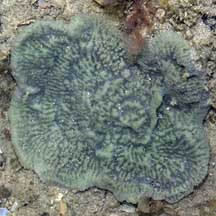 Sentosa, Mar 07 |
|
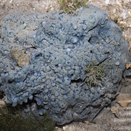 Sentosa, Apr 07 |
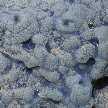 |
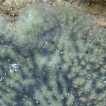 |
|
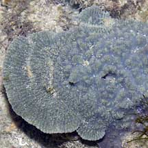 Sentosa, Aug 04 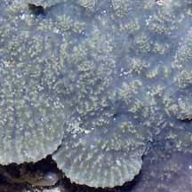 |
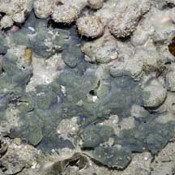 Pulau Hantu, Feb 08 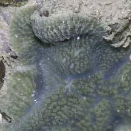 |
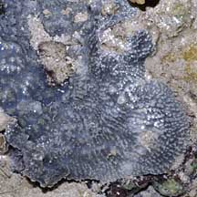 Pulau Salu, Aug 10 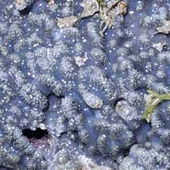 |
*Species are difficult to positively identify without close examination.
On this website, they are grouped by external features for convenience of display.
| Blue encrusting prickly sponges on Singapore shores |
| Photos of Blue encrusting prickly sponges for free download from wildsingapore flickr |
| Distribution in Singapore on this wildsingapore flickr map |
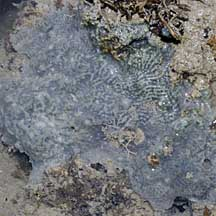 Terumbu Berkas, Jan 10 |
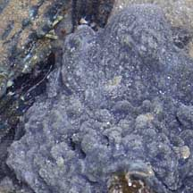 Pulau Sudong, Dec 09 |
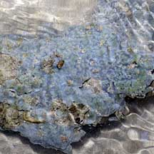 Pulau Pawai, Sep 12 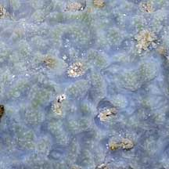 |